Errores y problemas comunes en QGIS #
Aquí recopilamos errores y problemas comunes en QGIS como apoyo general a la capacitación en QGIS.
Contenido #
Las capas que deberían estar en la misma posición no están unas sobre otras
La flecha norte no se sincroniza con el mapa correspondiente
Sistemas de coordenadas: ¿Qué significan todos estos términos?
Sistemas de coordenadas: ¿Cómo puedo redefinir el sistema de coordenadas de un conjunto de datos?
Sistemas de coordenadas: ¿Por qué se utiliza Mercator si está tan distorsionado?
Sistemas de coordenadas: ¡Mi conjunto de datos no se encuentra donde debería!
Sistemas de coordenadas: ¿En qué sistema de coordenadas debe estar mi conjunto de datos?
¡Mi conjunto de datos está ligeramente desplazado de donde debería estar!
Diferentes versiones de QGIS#
La Wiki y, en particular, los videos que contiene son solo una fotografía en el tiempo. QGIS en sí, así como las extensiones instalables, se desarrollan y mejoran constantemente. Por lo tanto, puede haber diferencias entre las distintas versiones en el aspecto de la interfaz de usuario o, en raras ocasiones, incluso en el funcionamiento. En consecuencia, puede haber diferencias entre la Wiki y el QGIS instalado en su PC. No obstante, este capítulo se centra en errores y problemas comunes, con la esperanza de que sean útiles para muchas versiones (futuras).
QGIS no abre en Mac#
Al abrir QGIS por primera vez en Mac puede aparecer este mensaje de error:
{kind=link}
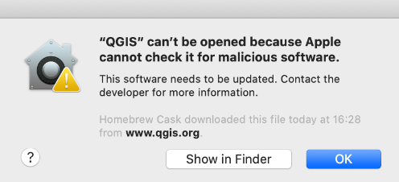
Fig. 41 Error al abrir QGIS en Mac por primera vez.#
Para solucionarlo, presione el botón control del teclado y haga clic derecho del mouse en abrir.
Si este problema persiste, puede cambiar la configuración de su dispositivo. Vaya a Settings > Security & Privacy y desplácese hacia abajo, haga clic en Open Anyway
{kind=link}
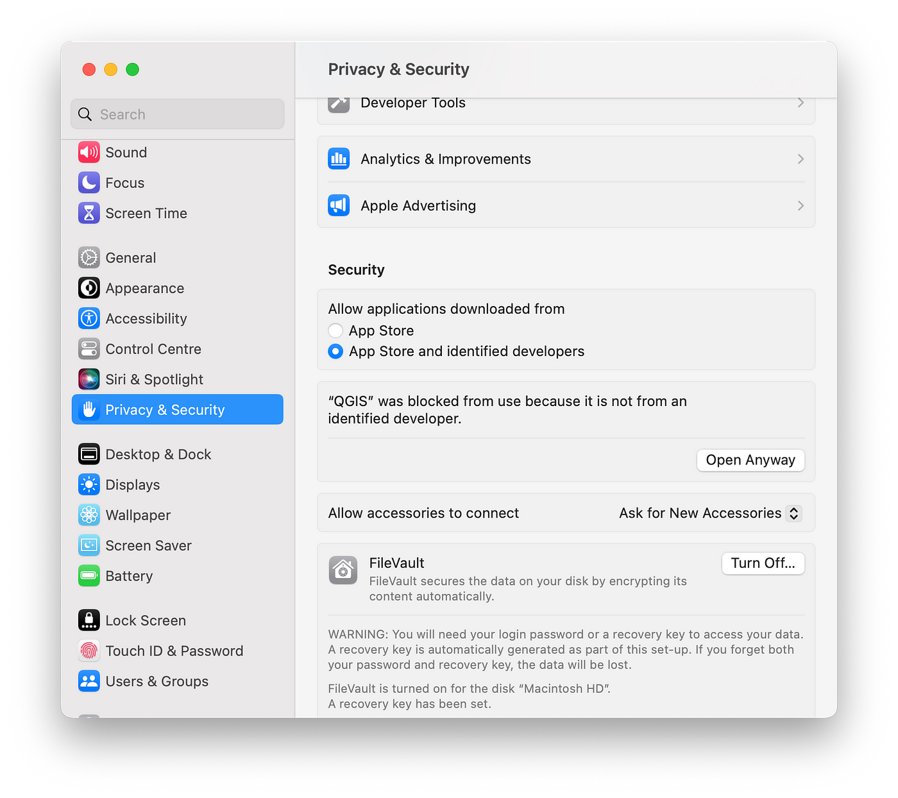
Fig. 42 Cambiar la configuración para abrir QGIS en Mac.#
Una capa no se muestra en QGIS#
Solución:
Haga clic derecho en la capa correspondiente.
Active la función
Zoom to Layeren la ventana emergente.
{kind=link}
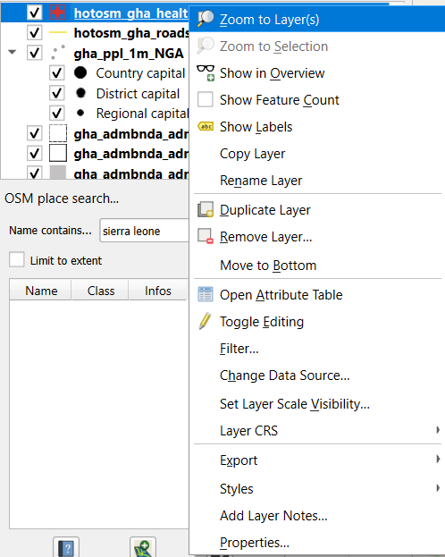
Fig. 43 Hacer zoom a la capa si no se muestra la capa.#
Desapareció una ventana de capas en QGIS#
Solución:
Abrir en la pestaña principal
View.En la ventana emergente, seleccione
Panels.En la subventana, marque la casilla
Layers.
{kind=link}
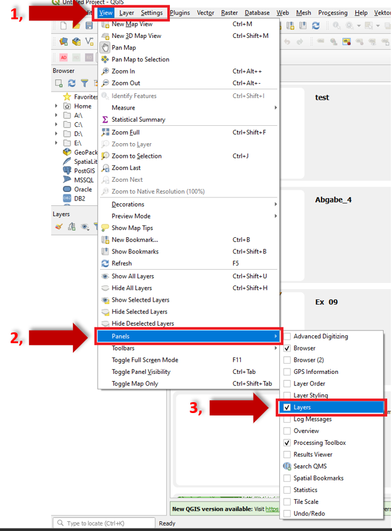
Fig. 44 Desapareció la ventana de capas.#
Las capas que deberían estar en la misma posición no están unas sobre otras.#
Solución:
Este tipo de problemas suele deberse a a) una falta de coincidencia entre el SRC de las capas y el del proyecto o b) una reproyección incorrecta.
a)
Compruebe las propiedades de la capa (haga clic con el botón derecho en la capa correspondiente).
En la ventana emergente, seleccione
Properties.En la siguiente ventana emergente, seleccione
Informationy revise qué proyección está definida en la entradaCoordinate Reference System (CRS).Además, compruebe si en la barra de estado, en la parte inferior derecha, está configurada la misma proyección.
Corrija cualquier discrepancia reproyectando las capas o cambiando la configuración del SRC del proyecto.
b)
Reproyección: Si hay dos capas con diferentes SRC, seleccione una de las capas como capa de entrada que tenga, por ejemplo, el SRC EPSG:32632 - WGS 84, y defina como SRC de destino EPSG:4326 - WGS 84. Al ejecutar el algoritmo obtendrá una nueva capa, idéntica a la capa de entrada, pero con un SRC diferente.
Se mostrará en el espacio de trabajo en el mismo lugar que las demás capas, ya que QGIS la reproyecta en tiempo de ejecución. Sin embargo, sus coordenadas reales son diferentes.
{kind=link}
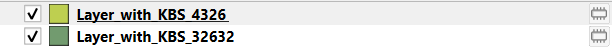
Fig. 45 Capa con diferentes SRC.#
Puede comprobarlo utilizando el algoritmo Add Geometry Attributes < Geometry Tools. Las coordenadas son distintas a las coordenadas de las otras dos tablas de atributos de las otras capas.
En su lugar, haga lo siguiente:
Seleccione la pestaña
Vector.En el menú emergente active
Data Management Tools.Y en el siguiente menú emergente
Reproject Layer.
{kind=link}
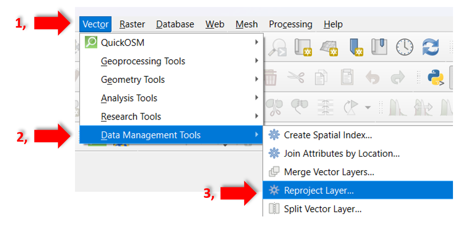
Fig. 46 Reproyectar capa en QGIS.#
{kind=link}
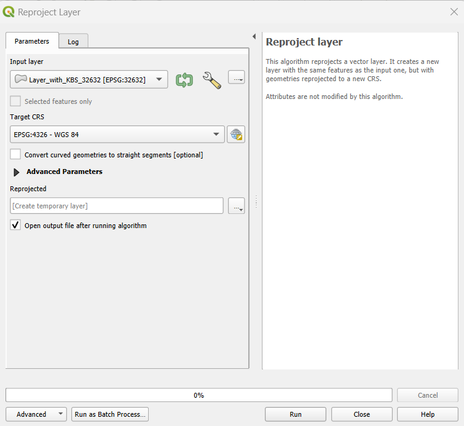
Fig. 47 Herramienta para reproyectar capas en QGIS.#
Guarde siempre las capas reproyectadas mediante las funciones Export y Save as, ya que solo se guardan temporalmente y desaparecerán tras cerrar el proyecto.
{kind=link}
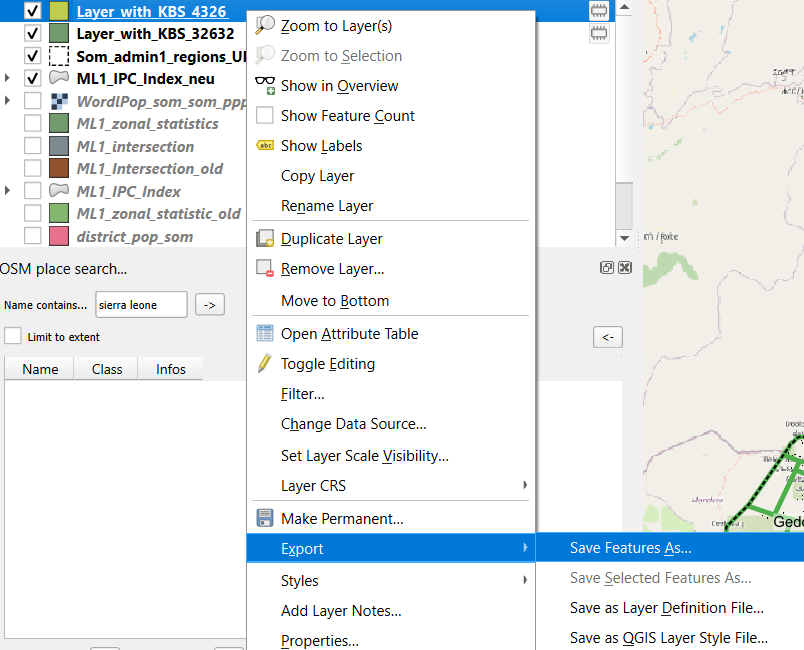
Fig. 48 Exportar capa reproyectada.#
Procedimiento similar para capas ráster…
Seleccione la pestaña
Raster.En el menú emergente active
Projections.Y en el siguiente menú emergente
Warp (Reproject).
{kind=link}
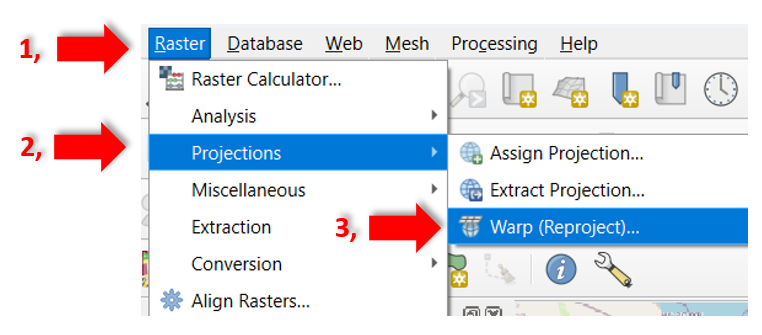
Fig. 49 Reproyectar capa ráster en QGIS.#
Attention
A menudo se producen errores si se establece el SRC y no se ha utilizado ninguna herramienta de reproyección. Si sospecha de que su reproyección ha salido mal, borre todas las capas afectadas de QGIS, vuelva a cargar los datos y, a continuación, reproyéctelos y expórtelos.
El archivo de capa ha desaparecido de la ventana de capas#
Si un archivo de capa ya no se muestra o no está activo en la ventana de capas después de reabrir un proyecto de QGIS, se trata solo de una capa temporal. Las capas temporales tienen un símbolo a la derecha de su nombre:
Solución:
La próxima vez, guárdelo:
Haga clic en la pestaña
Layery enSave asen la ventana emergente.
{kind=link}
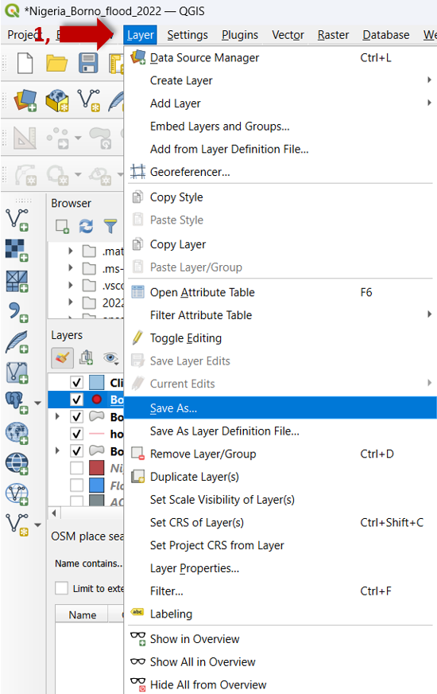
Fig. 50 Guardar capa.#
Ponga un nombre de archivo y haga clic en
three points para guardar el archivo en el lugar del directorio elegido.
para guardar el archivo en el lugar del directorio elegido.Seleccione el SRC correspondiente.
Haga clic en
ok.
{kind=link}
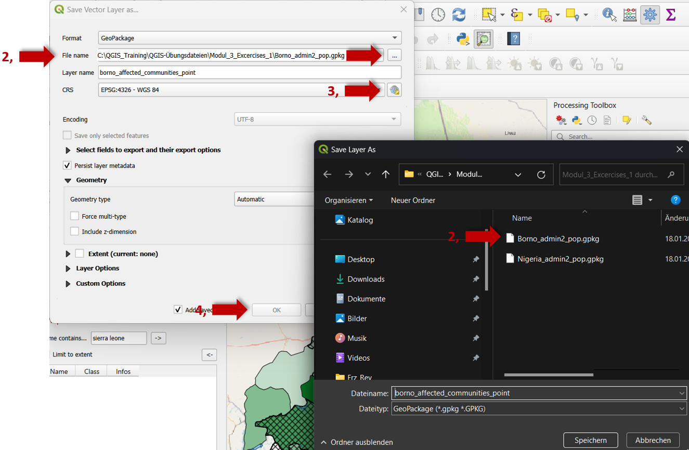
Fig. 51 Guarde la capa en su directorio.#
Faltan herramientas de procesamiento en la herramienta de paneles y la pestaña de vectores está incompleta#
Solución:
Active
Processing ToolsenPlugins>Manage and install Plugins.Seleccione
All.Vuelva a marcar la función
Processingen la lista correspondiente.
{kind=link}
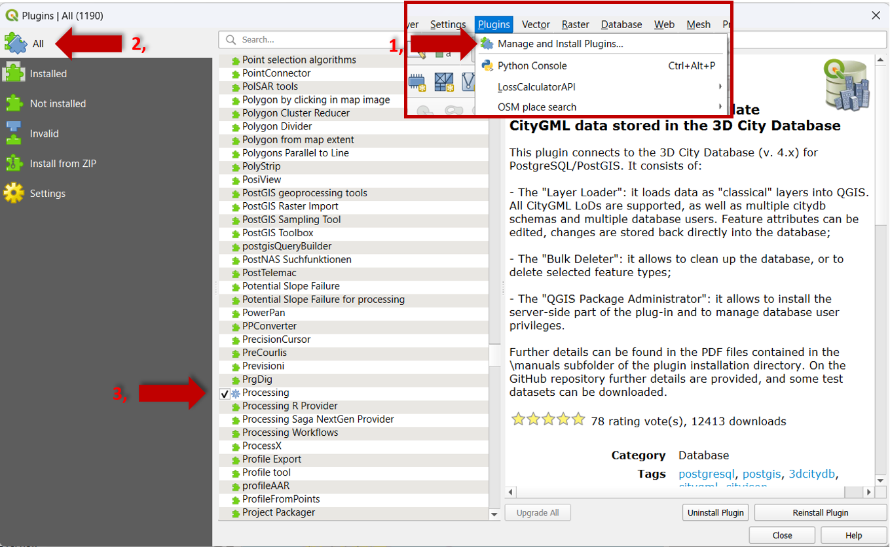
Fig. 52 Vuelva a instalar la herramienta de procesamiento.#
Véase también: Sistemas de información geográfica https://gis.stackexchange.com/questions/202111/missing-processing-tools-in-vector-menu-of-qgis
Falta la caja de herramientas#
Solución:
Para reactivar la
Toolbox haga clic en
haga clic en View Tab.En la ventana emergente, seleccione
Panels.En la siguiente ventana emergente marque la casilla de
Processing Toolbox.
{kind=link}
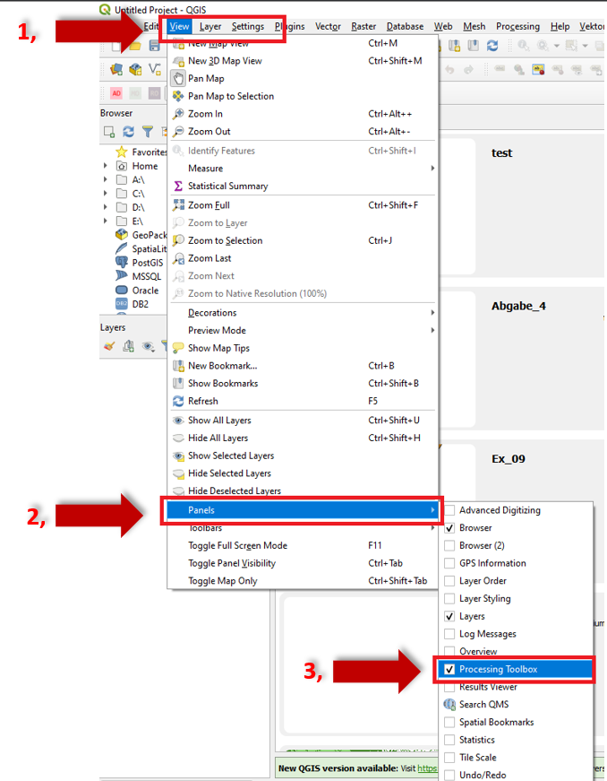
Fig. 53 Reactivar caja de herramientas.#
La flecha norte no se sincroniza con el mapa correspondiente#
Solución:
Hay dos lugares en los que tiene que definir con qué mapa debe sincronizarse la flecha norte.
En la pestaña Layout Tab (del diseño de impresión) para la imagen del mapa en General Settings asegúrese de que el mapa de referencia tiene seleccionado el mapa correcto.
{kind=link}
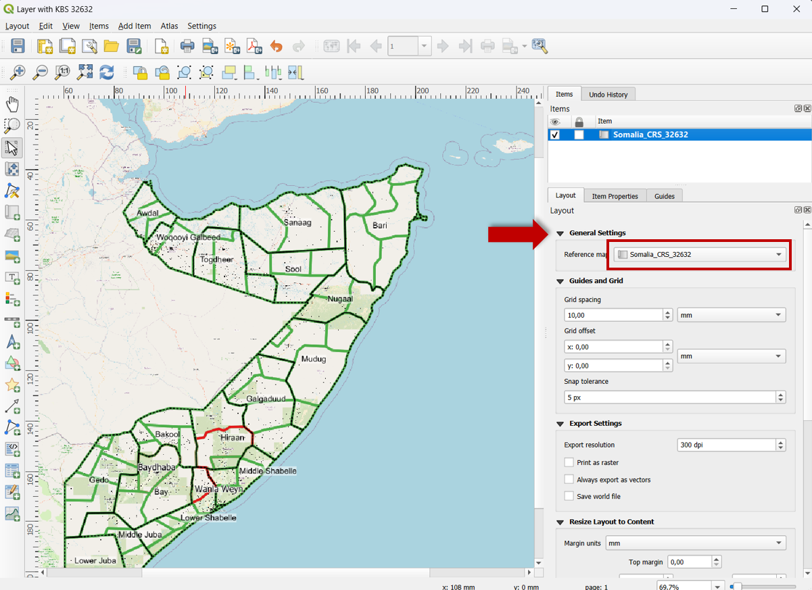
Fig. 54 Referencia correcta al mapa.#
Véase también: Sistemas de información geográfica https://gis.stackexchange.com/questions/265095/north-arrow-not-syncing-with-map-qgis-2-18#:~:text=1 Answer&text=2-,There are TWO places where you have to tell it,and tell it which map
Geometría inválida#
Si aparece el mensaje de error Invalid Geometries, es posible que los archivos vectoriales se hayan “desplazado” durante el procesamiento o la descarga (p. ej., las líneas de los polígonos ya no encajan exactamente).
Solución:
Estos errores en las geometrías pueden corregirse ejecutando Fix Geometries. Búsquela en la caja de herramientas de procesos.
Sistemas de coordenadas: ¿Qué significan todos estos términos?#
Los conjuntos de datos geoespaciales constan de tres datos básicos:
Atributos: los significados o etiquetas de un punto de datos.
Coordenadas: números que describen la posición del punto de datos en el espacio.
Sistema (de referencia) de coordenadas: metadatos que describen el espacio en sí; origen, ejes, unidades, etc.
Por ejemplo:
Atributos: “La Casa Blanca” o “1600 Pennsylvania Avenue”
Coordenadas: (-77.0367, 38.8976)
Sistema (de referencia) de coordenadas: WGS84 longitud, latitud
Tip
Para obtener información más detallada sobre los sistemas de coordenadas, véase también: https://ihatecoordinatesystems.com/#correct-crs
Sistemas de coordenadas: ¿Cómo puedo redefinir el sistema de coordenadas de un conjunto de datos?#
Redefinir significa que se modifican los metadatos sobre el sistema de coordenadas, pero no las coordenadas. Esto contrasta con las reproyecciones y transformaciones, que modifican tanto el sistema de coordenadas como las coordenadas.
Soluciones:
En QGIS, para los conjuntos de datos vectoriales, utilice la herramienta
Assign Projectiondel conjunto de herramientasVector General, no la herramientaReproject Layer. Véase también: https://docs.qgis.org/3.28/en/docs/user_manual/processing_algs/gdal/rasterprojections.html#assign-projectionEn QGIS, para los conjuntos de datos ráster, utilice la herramienta
Assign Projectiondel conjunto de herramientasGDAL, no la herramientaWarp (Reproject). Véase también: https://docs.qgis.org/3.28/en/docs/user_manual/processing_algs/gdal/rasterprojections.html#assign-projectionDesde la línea de comandos, para conjuntos de datos vectoriales, utilice
ogr2ogrcon el parámetro-a_srs, no con el parámetro-t_srs. Véase también: https://gdal.org/programs/ogr2ogr.html#cmdoption-ogr2ogr-a_srsDesde la línea de comandos, para los conjuntos de datos ráster, utilice
gdal_editcon el parámetro-a_srs. Véase también: https://gdal.org/programs/gdal_edit.html#cmdoption-a_srs.py
Sistemas de coordenadas: ¿Por qué se utiliza Mercator si está tan distorsionado?#
Mercator es la única proyección cartográfica cilíndrica conforme. Las proyecciones cartográficas cilíndricas significan que toda la Tierra se ajusta dentro de un rectángulo, lo que resulta muy conveniente para los algoritmos de procesamiento de datos que están diseñados para trabajar con imágenes rectangulares. Conforme significa que los ángulos y las formas siempre se preservan: el norte siempre está arriba, los cuadrados siguen siendo cuadrados, etc. Utilizar una proyección que no sea conforme haría que las formas se vieran estiradas, aplastadas y/o rotadas al hacer zoom.
{kind=link}
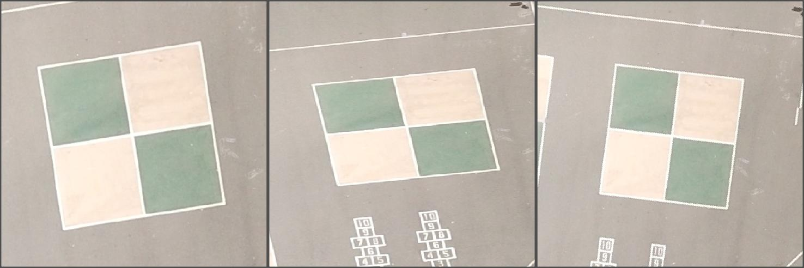
Fig. 55 Proyección Mercator.#
Mercator agranda las zonas más alejadas del ecuador, pero al menos esta distorsión es la misma horizontal y verticalmente. Y es trivial calcular un factor de escala para corregir las medidas (véase también: https://en.wikipedia.org/wiki/Mercator_projection#Scale_factor). La distorsión solo resulta problemática al visualizar un mapa a escala global, donde existe un rango amplio de factores de escala diferentes; pero la mayoría de los mapas no son de escala global y, para estos casos, existen muchas proyecciones más adecuadas para este caso.
Sistemas de coordenadas: ¡Mi conjunto de datos no se encuentra donde debería!#
Es probable que su conjunto de datos tenga un sistema de coordenadas incorrecto. Este es el caso más general del problema anterior. Esto puede ocurrir si el sistema de coordenadas falta por completo, en cuyo caso el software de SIG suele asumir que se trata del mismo sistema de coordenadas que el de un conjunto de datos cargado previamente, o del sistema de coordenadas establecido en el “proyecto” o “documento del mapa”.
Solución:
Redefinir el sistema de coordenadas, redefinir, es decir, cambiar el sistema de coordenadas pero no las coordenadas, al sistema de coordenadas correcto.
Abra su
Project: abra el proyecto de QGIS en el que desea redefinir el sistema de coordenadas.Acceda a
Project Properties: vaya aProject menuen la parte superior de la ventana de QGIS y seleccioneProperties. También puede presionarCtrl + Shift + Pcomo un atajo.Pestaña Sistema de coordenadas: en la ventana
Project Properties, seleccione la pestaña Sistema de coordenadas.Cambie el sistema de coordenadas: aquí puede seleccionar un nuevo sistema de coordenadas para su proyecto. Puede buscar un sistema de coordenadas específico utilizando la barra de búsqueda, o puede navegar por la lista de los sistemas de coordenadas disponibles.
Aplicar cambios: Una vez seleccionado el sistema de coordenadas deseado, haga clic en OK para aplicar los cambios. QGIS reproyectará las capas de su proyecto para que coincidan con el nuevo sistema de coordenadas.
{kind=link}
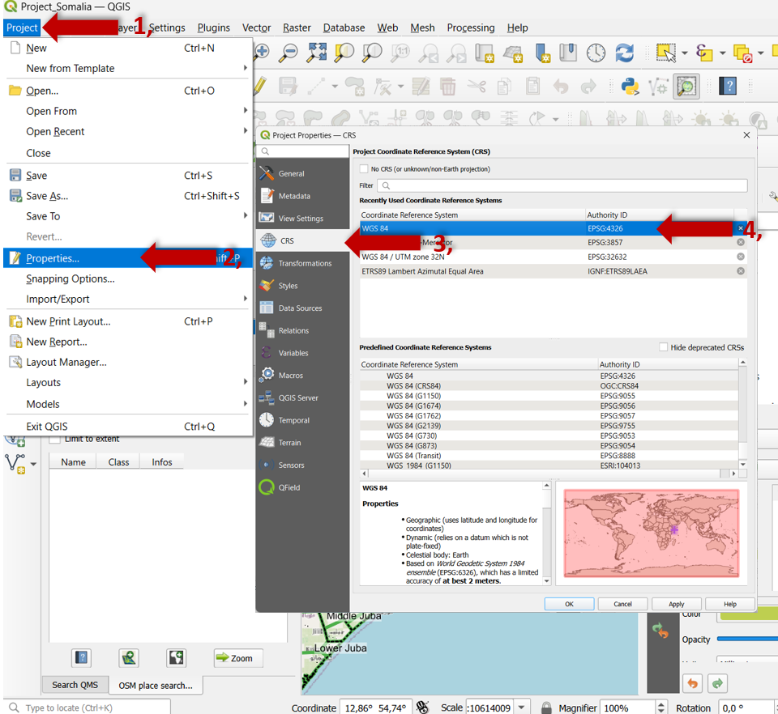
Fig. 56 Redefinir los SRC.#
Compruebe y ajuste las capas: después de redefinir el sistema de coordenadas, es esencial comprobar las capas para asegurarse de que se alinean correctamente. Algunas capas pueden requerir ajustes manuales o una reproyección si no se alinean como se esperaba. Vuelva a revisar la parte inferior derecha de la ventana de QGIS, donde se indica el SRC real.
{kind=link}
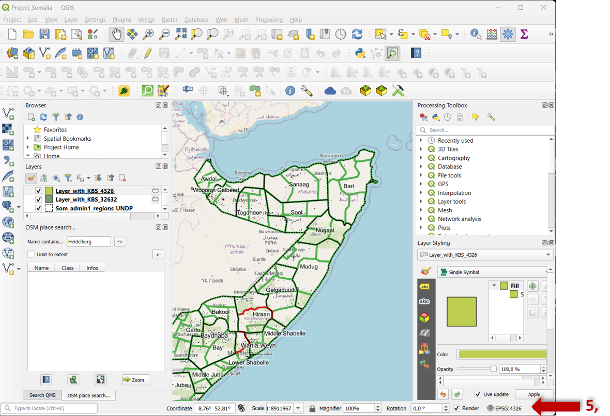
Fig. 57 Comprobar la redefinición del SRC.#
Sistemas de coordenadas: ¿En qué sistema de coordenadas debe estar mi conjunto de datos?#
Los atributos de un punto de datos dan contexto sobre dónde se encuentra en la Tierra. La mayoría de los programas de SIG muestran las coordenadas mínimas y máximas en las propiedades de la capa como “extensión” o “cuadro delimitador”.
Soluciones:
Si los atributos indican la longitud y la latitud aproximadas en las que deben encontrarse las coordenadas, intente realizar una búsqueda inversa. Esto se repite en todos los sistemas de coordenadas bien definidos, elimina la proyección de las coordenadas X, Y a WGS84 y mide el error respecto a la longitud y la latitud conocidas. Los errores menores a unos cientos de metros indican una proyección razonable, aunque no es lo bastante preciso para determinar el SCG. Puede ejecutar este código de ejemplo usted o utilizar este formulario:
Si las coordenadas tienen valores X entre -180 y 180, y valores Y entre -90 y 90, entonces probablemente quiera redefinir un sistema de coordenadas geográficas, o SCG, (con longitud y latitud) como WGS84.
Si las coordenadas tienen valores absolutos grandes, intente redefinirlas a un sistema de coordenadas local como UTM, Gauss-Krüger, State Plane o una cuadrícula nacional. También considere la posibilidad de probar con zonas vecinas, p. ej., si la zona UTM 19N es incorrecta, pruebe con la zona UTM 18N.
Si los atributos sugieren que el conjunto de datos está en EE. UU., podría haber un problema de conversión a/desde el sistema imperial. Pruebe a multiplicar/dividir las coordenadas de un punto de datos por 3,28084 para convertir pies a metros/metros a pies y compruebe si eso lo coloca en la ubicación correcta.
Si las coordenadas mínimas X/Y son cero y las máximas X/Y son positivas, es posible que el conjunto de datos se haya exportado desde un software no geoespacial, como Photoshop, Illustrator o Inkscape. Esto es especialmente probable si el conjunto de datos aparece invertido verticalmente, ya que esos editores suelen tener el eje Y aumentado hacia abajo. Tendrá que georreferenciar manualmente el conjunto de datos para utilizarlo, lo que cambia tanto las coordenadas como el sistema de coordenadas.
Véase también la siguiente Página_Wiki sobre Projections.
¡Mi conjunto de datos está ligeramente desplazado de donde debería estar!#
Es probable que su conjunto de datos tenga un sistema de coordenadas geográficas (SCG) con la longitud/latitud incorrecta. Los distintos SCG definen tamaños/formas ligeramente distintos de la Tierra (sus elipsoides) y diferentes posicionamientos sobre ella (sus datums). Como resultado, las mismas coordenadas de longitud/latitud en dos SCG diferentes pueden aparecer desplazadas, aunque normalmente con una diferencia de decenas de metros. Esto puede ocurrir incluso si está utilizando un sistema de coordenadas proyectadas (SCP) cuyas unidades no son grados de longitud/latitud, ya que los SCP tienen un SCG incrustado en ellos.
{kind=link}
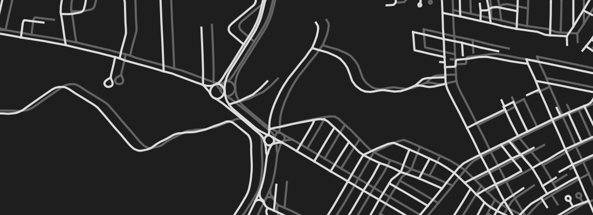
Fig. 58 Desplazamiento por SCG erróneo. Fuente: Dan Mahr. Todos los derechos reservados. Este contenido está excluido de nuestra licencia Creative Commons.#
Solución:
Redefina el sistema de coordenadas, es decir, cambie el sistema de coordenadas pero no las coordenadas, por uno de los siguientes:
Intente redefinirlo al SCG WGS84.
Si su conjunto de datos se recopiló con GPS, intente redefinirlo a WGS84.
Si su conjunto de datos se recopiló con GLONASS, intente redefinirlo a PZ-90.
Si su conjunto de datos se recopiló con Galileo, intente redefinirlo a ITRF.
Si su conjunto de datos se encuentra en EE.UU., intente redefinirlo a NAD27, NAD83 o WGS84.
Si su conjunto de datos se encuentra en Europa, intente redefinirlo a ED50, ETRS89 o WGS84.
Si su conjunto de datos se encuentra en Australia, intente redefinirlo a GDA94 o GDA2020.
Si su conjunto de datos se encuentra en China y/o se ha recopilado con BeiDou, buena suerte. :weary:
Resultados erróneos o falta de datos#
Si obtiene resultados erróneos o le faltan datos, compruebe los nombres de los archivos. No debe utilizar nombres de archivo con mayúsculas, caracteres especiales o espacios vacíos. Utilice siempre guiones bajos entre las palabras del nombre del archivo.
Problemas de gestión de archivos#
Puede haber diferentes razones, p. ej., al reabrir su proyecto en QGIS, no todos los archivos se mostrarán correctamente porque algunos se perdieron o se almacenaron en diferentes lugares. En cualquier caso, hay una solución: una estructura de carpetas clara.
Solución:
Estructura de carpetas estándar recomendada:
{kind=link}
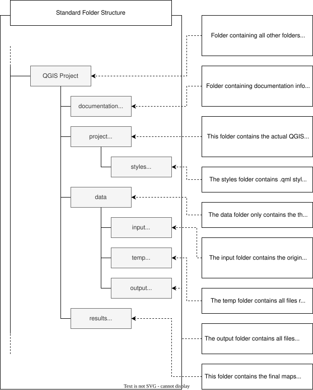
Fig. 59 Estructura de carpetas estándar. Fuente: HeiGIT#
Cómo podría verse en su PC:
{kind=link}
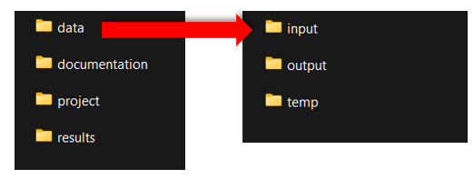
Fig. 60 Estructura de carpetas estándar en su PC.#
La estructura de carpetas estándar tiene dos ventajas principales:
Al compartir toda la carpeta del proyecto, podemos garantizar que el proyecto se ejecutará sin problemas en una computadora diferente.
La estructura de carpetas permite la correcta organización de los datos geoespaciales y favorece el funcionamiento estable de un proyecto en QGIS.
La plantilla de estructura de carpetas puede descargarse aquí.
Tip
Los datos de capa utilizados en el proyecto no se guardan en el archivo de proyecto. En cambio, el archivo de proyecto solo contiene las rutas de los archivos donde se encontraban los datos de las capas en el momento en que el proyecto se guardó por última vez en la computadora. Si posteriormente se cambia la ubicación de estos datos de la capa, aparecerá el mensaje de error “handle unavailable layers” (gestionar capas no disponibles) cuando se vuelva a abrir el proyecto. Una buena organización de los datos con una estructura de carpetas fija y bien elaborada evita tales problemas.
Véase también la siguiente Página_Wiki para How to create a new QGIS project y How to open an existing QGIS project.
Problemas específicos de QGIS#
Configuración básica > Desactivar la selección automática de la proyección#
Después de instalar QGIS, deben modificarse algunos ajustes básicos para evitar posibles fuentes de error. Si un archivo de capas no tiene una proyección, deberá definirse una proyección para este cuando se importe a QGIS. Al desactivar la selección automática de la proyección, esta puede definirse manualmente. Esto evita que las capas se encuentren en la proyección equivocada accidentalmente.
Seleccione la pestaña
Settings.A continuación, en el menú de navegación active
Options.En la ventana emergente, seleccione
CRS Handling.En
CRS for projectsactiveUse CRS from first layer added.Y en
CRS for layersactivePrompt for CRS.
{kind=link}
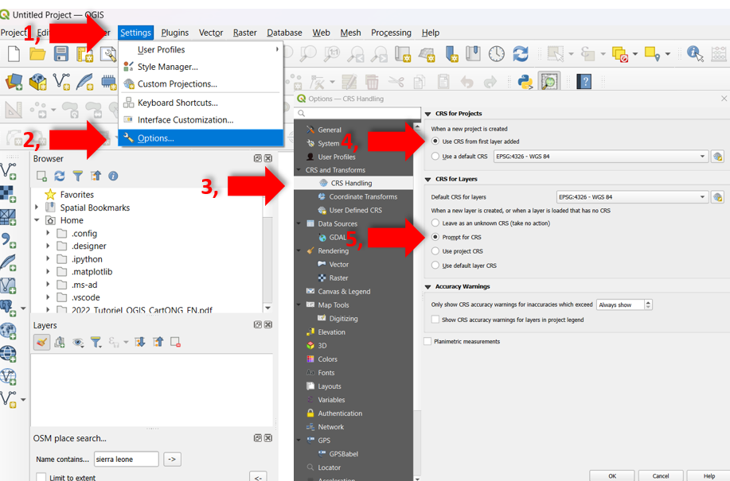
Fig. 61 Cambiar la configuración del SRC en QGIS.#
Guardar regularmente#
Lamentablemente, los programas de SIG son conocidos por congelarse o fallar por completo. Aunque existe una tendencia a reducir las complicaciones con un mejor hardware, incluso una “computadora para videojuegos” que cuesta varios miles de dólares no es completamente segura. Las tareas más complejas, con tiempos de cálculo más largos, pueden seguir causando problemas. Por ello, se recomienda guardar con regularidad.
Véase también la siguiente Página_Wiki Save and open QGIS Projects.
Aplicaciones GRASS#
QGIS también permite utilizar herramientas de software de SIG externo, como el SIG GRASS. GRASS no tiene que descargarse por separado, sino que se instala automáticamente al instalar QGIS. Las herramientas de GRASS se identifican por su icono.
Attention
Tenga en cuenta que el software GRASS no se inicia cuando se inicia la aplicación estándar de QGIS. En consecuencia, puede aparecer un mensaje de error al utilizar las herramientas de GRASS. Esto puede remediarse abriendo QGIS con la aplicación GRASS (que se encuentra mediante la función de búsqueda de la computadora) en lugar de la aplicación estándar.
SAGA con Linux#
SAGA es otro programa externo de SIG. Las herramientas SAGA se identifican por su icono. Cuando se utiliza Windows o MacOS como sistema operativo, SAGA se implementa automáticamente al instalar QGIS. Con Linux, sin embargo, SAGA no se instala automáticamente y debe instalarse manualmente. La experiencia ha demostrado que esta instalación no siempre es fácil y puede causar problemas. Como alternativa, puede utilizar una máquina virtual de Windows o MacOS, o abstenerse de utilizar las herramientas SAGA (entonces tendrá que buscar herramientas alternativas por su cuenta).
Diéresis, caracteres especiales y espacios en las rutas de los archivos#
Si la ruta del archivo contiene diéresis (ä,ö,ü), caracteres especiales (!,?, ., etc.) o espacios, pueden ocurrir problemas al procesar estos archivos con QGIS. Por ello, se recomienda evitar estos caracteres en las rutas de los archivos (sustituya las diéresis y reemplace los espacios por _).
Attention
Los archivos temporales son específicos de cada usuario (si varias personas utilizan una misma PC, cada una tiene sus propios archivos temporales). Por lo tanto, la ruta del archivo contiene su nombre de usuario. Si contiene caracteres problemáticos, entonces es recomendable cambiarlo.
Enlaces de acceso a la Ayuda de QGIS#
Aquí encontrará más enlaces de acceso a la ayuda o enlaces a la comunidad/foro de QGIS para tratar cuestiones específicas:
Tutoriales y consejos sobre QGIS:#
Colección de tutoriales y consejos sobre QGIS: https://www.qgistutorials.com/en/
Manual de capacitación en QGIS: https://docs.qgis.org/3.28/en/docs/training_manual/index.html
Guía del usuario de QGIS: https://docs.qgis.org/3.28/en/docs/user_manual/index.html
Guía/manual del servidor de QGIS: https://docs.qgis.org/3.28/en/docs/server_manual/index.html
Manual del usuario de complementos de QGIS: https://docs.qgis.org/3.28/en/docs/user_manual/plugins/plugins.html
Taller y tutoriales en video de QGIS (Universidad de Harvard): https://gis.harvard.edu/qgis-workshop-and-video-tutorials-0
Tutorial de QGIS (CartONG): https://cartong.pages.gitlab.cartong.org/learning-corner/en/6_tutorials/6_3_gis/6_3_1_qgis
Comunidad/foros de QGIS:#
Sistemas de Información Geográfica: https://gis.stackexchange.com/?tags=qgis
Grupos de usuarios de QGIS: https://www.qgis.org/en/site/forusers/usergroups.html#qgis-usergroups
Canales de YouTube sobre QGIS:#
Los mejores canales de YouTube sobre QGIS y herramientas SIG de código abierto: https://hatarilabs.com/ih-en/the-best-youtube-channels-in-qgis-and-open-source-gis-tools-in-any-language
Guía para principiantes absolutos en QGIS: https://www.youtube.com/watch?v=NHolzMgaqwE
Tutorial completo de QGIS para principiantes: https://www.youtube.com/watch?v=d15Xl4OphDk
QGIS para principiantes: https://www.youtube.com/watch?v=Eg4_duqH5Q4
Introducción a QGIS: https://www.youtube.com/watch?v=kxJI5FAGjzQ
ChatGPT#
Y no olvide ChatGPT https://chat.openai.com/ ¡Es rápido!